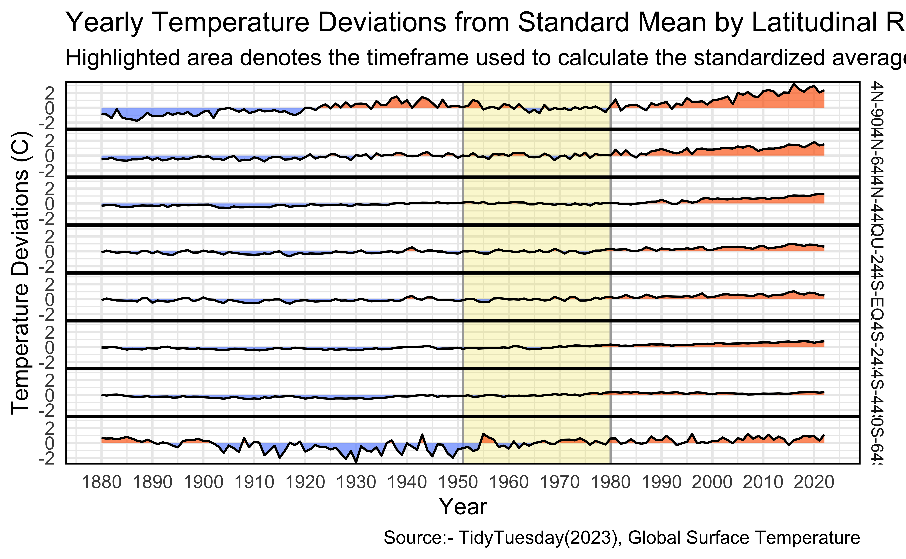

Warning: package 'knitr' was built under R version 4.3.2Exploring Global Surface Temperature Anomalies
Insights and Visualizations for Climate Understanding
Abstract
This project is analysis of NASA datasets on global surface temperature anomalies. It explores temperature trends across regions and seasons, encompassing global, Northern Hemisphere, Southern Hemisphere, and zonal anomalies.
This analysis will enhance understanding of climate change impacts on global temperatures. And the project’s visualizations will contribute valuable insights to the discourse on climate change, aiding researchers, policymakers, and the public in addressing environmental challenges.
Introduction
The data comes from the NASA GISS Surface Temperature Analysis (GISTEMP v4). These datasets are tables of global and hemispheric monthly means and zonal annual means. They combine land-surface, air and sea-surface water temperature anomalies (Land-Ocean Temperature Index, L-OTI). The values in the tables are deviations from the corresponding 1951-1980 means.
This project utilizes R programming and libraries such as tidyverse, ggplot2, and ggmap for preprocessing and to make visualizations including boxplots, heatmaps, and geographical maps, ultimately identifying trends and patterns in temperature anomalies.
Analysis of Zonal Temperature Anomalies
In this section we will be observing the trends in the mean annual temperature anomalies of each of the latitudinal zones of earth – EQ-24N, 24N-44N, 44N-66N, 66N-90N & similarly EQ-24S, 24S-44S, 44S-66S, 66S-90S over the years 1880-2020. For this we have used the zonnan_temps.csv dataset to produce visualizations which depict the anomalies.
Time Series Analysis - Line Graph
To visualize this data, first we have come up with a time series line graph. The line graph titled “Yearly Temperature Deviations from Standard Mean” provides a clear representation of the yearly temperature deviations from their standard mean, offering insights into trends of annual temperature anomalies over time.
# In order to properly fill space between 0 and geom_line,
# we need to create dummy samples where geom_line intersects 0.
# This prevents geom_ribbon from coloring outside the line.
# Our strategy is to identify all intersections through zero
# via positive slopes (low to high values) and negative slopes
# (high to low values).
# Because all data points are 1 unit apart on the x axis,
# The x axis value of the 0 point may be determined by the
# ratio of magnitudes between the low and high values.
devs <- zonnan_clean$temp_dev
idx1 <- which(devs > 0 & zonnan_clean$Year < 2022)
idx2 <- idx1[which(devs[idx1+1] < 0)]
neg_slope_zeros <- zonnan_clean[idx2,]
neg_slope_zeros$Year <- neg_slope_zeros$Year +
devs[idx2] / (devs[idx2] - devs[idx2+1])
neg_slope_zeros$temp_dev = 0
idx3 <- which(devs < 0)
idx4 <- idx3[which(devs[idx3+1] > 0)]
pos_slope_zeros <- zonnan_clean[idx4,]
pos_slope_zeros$Year <- pos_slope_zeros$Year +
devs[idx4] / (devs[idx4] - devs[idx4+1])
pos_slope_zeros$temp_dev = 0
zonnan_zeros <- rbind(zonnan_clean, rbind(pos_slope_zeros, neg_slope_zeros))
# Separate lower and higher than average values for color filling
subzero = zonnan_zeros |>
mutate(temp_dev = case_when(temp_dev > 0 ~ 0,
temp_dev <= 0 ~ temp_dev))
above_zero = zonnan_zeros |>
mutate(temp_dev = case_when(temp_dev < 0 ~ 0,
temp_dev >= 0 ~ temp_dev))
ggplot(data=zonnan_clean, aes(x=Year, y=temp_dev)) +
facet_grid(lat_range ~ .) +
annotate('rect',
xmin = 1951,
xmax = 1980,
ymin = -Inf,
ymax = Inf,
color='darkgrey',
width=0.5,
fill="#F0E442",
alpha=0.25) +
theme_minimal() +
# Fill area below the line when temp_dev is below 0
geom_ribbon(data = subzero, aes(ymin=temp_dev, ymax=0), fill="#648FFF", alpha=0.65) +
# Fill area above the line when temp_dev is above 0
geom_ribbon(data = above_zero, aes(ymin=0, ymax=temp_dev), fill="#FE6100", alpha=0.65) +
geom_line(linewidth=0.5) +
theme(
strip.background = element_blank(),
strip.text.x = element_blank()
) +
theme(panel.spacing.x=unit(0.0, "lines"),
panel.spacing.y=unit(0, "lines"),
panel.border = element_rect(color = "black", fill = NA, size = 0.75),
axis.text.y = element_text(angle = 0),
strip.text = element_text(size = 8)
) +
scale_y_continuous(breaks = c(-2,0,2)) +
scale_x_continuous(breaks = seq(1880, 2022, 10)) +
labs(
x = "Year",
y = "Temperature Deviations (C)",
title = "Yearly Temperature Deviations from Standard Mean by Latitudinal Range",
subtitle = "Highlighted area denotes the timeframe used to calculate the standardized average.",
caption = "Source:- TidyTuesday(2023), Global Surface Temperature"
) 
With different coloured lines representing various regions: Region below the mean with light blue and above the mean with orange. The y-axis shows temperature deviations ranging from -2°C to 2°C, while the x-axis shows years from 1880 to 2020. A yellow highlighted section indicates the period (1951-1980) by which the standard mean was established.
World Map
Now, to visualize and explore the outcomes of the line graph more effectively, we have come up with a world map. The heatmap titled “The Standard Deviation of Zonal Annual Temperature Anomalies over 1880 to 2022” provides a comprehensive view of the variability in temperature anomalies across different latitudes and longitudes globally.
# Calculating the standard deviation of each zone annual temperature anomaly
data <- zonnan_clean |>
group_by(lat_range) |>
summarise_at(vars(temp_dev), list(name=sd))
# set theme for ggplot2
ggplot2::theme_set(ggplot2::theme_minimal(base_size = 14))
# set width of code output
options(width = 65)
# set figure parameters for knitr
knitr::opts_chunk$set(
fig.width = 7, # 7" width
fig.asp = 0.618, # the golden ratio
fig.retina = 3, # dpi multiplier for displaying HTML output on retina
fig.align = "center", # center align figures
dpi = 300 # higher dpi, sharper image
)
# Parsing the lat_range values
parse_lat_range <- function(lat_range_str) {
parts <- strsplit(gsub("N|S|EQU", "", lat_range_str), "-")[[1]]
lat_start <- as.numeric(parts[1])
if (grepl("S", lat_range_str)) {
lat_start <- -lat_start
}
lat_end <- ifelse(length(parts) > 1, as.numeric(parts[2]), lat_start) # Handle single value ranges
if (grepl("S", lat_range_str, fixed = TRUE)) {
lat_end <- -lat_end
}
return(c(lat_start, lat_end))
}
# Apply parsing function and update data frame
lat_ranges <- t(sapply(data$lat_range, parse_lat_range))
data$lat_start <- lat_ranges[, 1]
data$lat_end <- lat_ranges[, 2]
data <- data %>%
mutate(across(everything(), ~replace_na(.x, 0)))
# Plot the map with temperature anomalies
world_map <- map_data("world")
# Removing some parts of the world_map which fall outside of the world longitude range!
world_map <- world_map %>%
filter(long >= -180 & long <= 180)
# Plotting the main map.
gg <- ggplot() +
geom_polygon(data = world_map,
aes(x = long, y = lat, group = group),
fill = "white", color = "black") +
geom_rect(data = data,
aes(xmin = -180, xmax = 180, ymin = lat_start, ymax = lat_end, fill = name),
color = alpha("black", 0.2), alpha = 0.5) +
scale_fill_gradient(low = "#648FFF", high = "#FE6100", name = "Std") +
coord_fixed(1.3) + # Maintain aspect ratio
labs(title = "The Standard Deviation of Zonnal Annual Temperature Anomalies over 1880 to 2022",
fill = "Anomaly",
x = "Longitude", y = "Latitude",
caption = "Source:- TidyTuesday(2023), Global Surface Temperature") +
scale_x_continuous(breaks = seq(-180, 180, by = 20),
labels = paste(seq(-180, 180, by = 20), "°", sep = ""),
limits = c(-180, 180),
expand = c(0, 0)) +
scale_y_continuous(breaks = c(-90, -64, -44, -24, 0, 24, 44, 64, 90),
labels = paste(c(-90, -64, -44, -24, 0, 24, 44, 64, 90), "°", sep = ""),
expand = c(0, 0)) +
theme(plot.margin = margin(t = 0, # Top margin
r = 0, # Right margin
b = 0, # Bottom margin
l = 0),
axis.text.x = element_text(angle = 90, vjust = 0.5, hjust=1, size = 10),
axis.text.y = element_text(size = 10),
plot.title = element_text(size = 10),
axis.text = element_text(size = 20),
axis.title.x = element_text(size = 10),
axis.title.y = element_text(size = 10))
# Print the plot
print(gg)The color gradient from blue to red indicates the range of standard deviation, with blue being low and red being high. The noticeable shift towards warmer colors in some areas, especially near the poles, suggests a significant increase in temperature anomalies, indicative of a warming trend.
This visualization aids in understanding the impacts of climate change on different regions of the Earth, providing insights into potential shifts in regional climate patterns and their subsequent effects on ecosystems and human livelihoods.
Analysis of Seasonal Temperature anomalies
In this section, we would be examining the variations in temperature anomalies across different seasons and compare the same between northern and southern hemispheres. Further these variations would also be visualized over the years, giving more detailed information. For this, we used the nh_temps.csv and sh_temps.csv datasets to produce visualizations which depict the anomalies.
Boxplot
The boxplot titled “Comparison of Temperature Anomalies by Season and Hemisphere” provides a comparative analysis of temperature anomalies by season and hemisphere.
#Create a Boxplot
ggplot(comprehensive_df, aes(x = Season, y = Average_Temperature_Anomaly, fill = Hemisphere)) +
geom_boxplot() +
labs(
title = "Comparison of Temperature Anomalies by Season and Hemisphere",
x = "Season",
y = "Average Temperature Anomaly",
fill = "Hemisphere",
caption = "Source:- TidyTuesday(2023), Global Surface Temperature") +
theme_minimal() +
scale_fill_manual(values = c("#648FFF", "#FE6100"))From the graph, we can observe that both the Northern Hemisphere (NH) and Southern Hemisphere (SH) experience similar patterns of temperature anomalies across different seasons, with slight variations in magnitude. This suggests that the impacts of climate change are global, affecting both hemispheres and all seasons, albeit to varying degrees.
The graph also allows us to compare the temperature anomalies of different seasons within each hemisphere. For instance, we can see if winters are becoming warmer or summers are becoming hotter over time. This could provide insights into the shifting patterns of seasons and their potential effects on human livelihoods. For example, warmer winters could affect the hibernation patterns of animals, while hotter summers could lead to more frequent and severe heatwaves, impacting human health and agriculture.
Heatmaps
Now, we are going in detail, exploring the variations of seasonal temperature anomalies over the years. For this we have made a facet of heat maps, “Temperature Anomalies in Northern and Southern Hemisphere over the years”.
library(ggplot2)
# Determine the overall range of temperature anomalies
overall_range <- range(comprehensive_df$Average_Temperature_Anomaly, na.rm = TRUE)
# Combine NH and SH heatmaps into one plot
combined_heatmap <- ggplot(comprehensive_df %>% filter(!is.na(Average_Temperature_Anomaly)),
aes(x = Season, y = Year, fill = Average_Temperature_Anomaly)) +
geom_tile(color = "white") +
scale_fill_gradient2(low = "#648FFF", mid = "white", high = "#FE6100", midpoint = 0, limits = overall_range) +
labs(title = "Temperature Anomalies in Northern and Southern Hemispheres over the years",
x = "Season",
y = "Year",
fill = "Temperature Anomaly",
caption = "Source: TidyTuesday(2023), Global Surface Temperature") +
theme_minimal() +
theme(axis.text.x = element_text(angle = 45, hjust = 1)) +
facet_wrap(~ Hemisphere, ncol = 2)
# Display the combined heatmap
combined_heatmapThe y-axis for each of the graphs is the four seasons – Fall, Spring, Summer, Winter. The x-axis being the years 1880-2020. The color gradient from blue to red indicates the range of temperature anomalies, with blue being below their mean (-ve anomalies) and red being above their mean (+ve anomalies).
From the maps we can observe that warmer colors have significantly started to appear in the northern hemisphere from the 1920’s itself whereas in southern hemisphere the reds started to appear from the 1960’s showing that the northern hemisphere started getting warmer way earlier. Which makes sense considering industrialization first began in the northern hemisphere itself.
World Maps
Here, we have extended our analysis by using geom polygons to overlap Seasonal temperature anomalies over the world map, used facet wrap to combine the seasons of a year, and repeated this for three specific years namely 1880, 1951, 2022. In each of the graph, we have four seasons, in each season we have a world map with latitudinal zones marked and the color gradient through the zones depict how the temperature anomalies have varied through the zones.
library(ggplot2)
library(dplyr)
library(tidyr)
library(ggplot2)
library(maps)
# set theme for ggplot2
ggplot2::theme_set(ggplot2::theme_minimal(base_size = 11))
# set width of code output
options(width = 65)
# set figure parameters for knitr
knitr::opts_chunk$set(
fig.width = 12, # 7" width
fig.asp = 1.2, # the golden ratio
fig.retina = 3, # dpi multiplier for displaying HTML output on retina
fig.align = "center", # center align figures
dpi = 300 # higher dpi, sharper image
)
# Assuming the zones represent bands from the equator to the poles.
latitude_ranges <- tibble(
Zone = c("90S-64S", "64S-44S", "44S-24S", "24S-EQU", "EQU-24N", "24N-44N", "44N-64N", "64N-90N"),
lat_start = c(-90, -64, -44, -24, 0, 24, 44, 64),
lat_end = c(-64, -44, -24, 0, 24, 44, 64, 90)
)
# Transform zonann_temps to long format and assign latitude ranges
zonann_long <- zonann_temps %>%
pivot_longer(
cols = -Year,
names_to = "Zone",
values_to = "Temperature_Anomaly"
) %>%
inner_join(latitude_ranges, by = "Zone")
# Determine the hemisphere based on latitude ranges and merge
zonann_long <- zonann_long %>%
mutate(Hemisphere = if_else(lat_start >= 0, "NH", "SH"))
merged_data <- comprehensive_df %>%
inner_join(zonann_long, by = c("Year","Hemisphere"))
merged_data <- merged_data %>%
select(-Zone, -Temperature_Anomaly)
# Filter for Fall data for both NH and SH
fall_data <- merged_data %>%
filter(Season == "Fall")
# Filter for Spring data for both NH and SH
spring_data <- merged_data %>%
filter(Season == "Spring")
# Filter for Summer data for both NH and SH
summer_data <- merged_data %>%
filter(Season == "Summer")
# Filter for Winter data for both NH and SH
winter_data <- merged_data %>%
filter(Season == "Winter")
# Combine all seasonal data for 1880
all_seasons_data_1880 <- bind_rows(
winter_data %>% filter(Year == 1880) %>% mutate(Season = "Winter"),
summer_data %>% filter(Year == 1880) %>% mutate(Season = "Summer"),
spring_data %>% filter(Year == 1880) %>% mutate(Season = "Spring"),
fall_data %>% filter(Year == 1880) %>% mutate(Season = "Fall")
)
# Combine all seasonal data for 1951
all_seasons_data_1951 <- bind_rows(
winter_data %>% filter(Year == 1951) %>% mutate(Season = "Winter"),
summer_data %>% filter(Year == 1951) %>% mutate(Season = "Summer"),
spring_data %>% filter(Year == 1951) %>% mutate(Season = "Spring"),
fall_data %>% filter(Year == 1951) %>% mutate(Season = "Fall")
)
# Combine all seasonal data for 2022
all_seasons_data_2022 <- bind_rows(
winter_data %>% filter(Year == 2022) %>% mutate(Season = "Winter"),
summer_data %>% filter(Year == 2022) %>% mutate(Season = "Summer"),
spring_data %>% filter(Year == 2022) %>% mutate(Season = "Spring"),
fall_data %>% filter(Year == 2022) %>% mutate(Season = "Fall")
)
plot_all_seasons_temperature_anomaly <- function(data, year) {
# Filter for the given year
data_year <- data %>% filter(Year == year)
# Define the color palette for consistency across plots
color_palette <- c("#648FFF", "#FE6100")
# Get the world map data
world_map <- map_data("world")
# Plot the map with facets for each season
gg <- ggplot(data = data_year) +
geom_rect(aes(xmin = -180, xmax = 180, ymin = lat_start, ymax = lat_end, fill = Average_Temperature_Anomaly), color = "black") +
geom_polygon(data = world_map, aes(x = long, y = lat, group = group), fill = NA, color = "black", alpha = 0.5) +
scale_fill_gradient(low = color_palette[1], high = color_palette[2], name = "Avg Temp Anomaly") +
coord_fixed(1.3) +
labs(title = paste("Temperature Anomaly for", year),
x = "Longitude", y = "Latitude",
caption = "Source:- TidyTuesday(2023), Global Surface Temperature") +
facet_wrap(~Season) + # Ensures that the season name is retained
theme_minimal() +
scale_x_continuous(breaks = seq(-180, 180, by = 60),
labels = paste(seq(-180, 180, by = 60), "°", sep = ""),
limits = c(-180, 180)) +
scale_y_continuous(breaks = c(-90, -64, -44, -24, 0, 24, 44, 64, 90),
labels = paste(c(-90, -64, -44, -24, 0, 24, 44, 64, 90), "°", sep = "")) +
theme(plot.margin = margin(t = 0, r = 0, b = 0, l = 0),
axis.text.x = element_text(angle = 90, vjust = 0.5, hjust=1),
axis.text.y = element_text(),
plot.title = element_text(size = 14, hjust = 0.5),
strip.text = element_text(size = 10)) # Adjust the size of the facet label text if necessary
return(gg)
}
# Plot all seasons for 1880 with consistent legend colors
plot_1880 <- plot_all_seasons_temperature_anomaly(all_seasons_data_1880, 1880)
# Plot all seasons for 1951 with consistent legend colors
plot_1951 <- plot_all_seasons_temperature_anomaly(all_seasons_data_1951, 1951)
# Plot all seasons for 2022 with consistent legend colors
plot_2022 <- plot_all_seasons_temperature_anomaly(all_seasons_data_2022, 2022)
# Print the plots
print(plot_1880)
print(plot_1951)print(plot_2022)In the first graph, “Temperature Anomaly 1880”, we can observe that the color gradient only depicts either zero or negative temperature anomalies. Which means the temperatures have either been their mean value or have gone below it but never exceeded. All in all, we can say it did not get warmer in 1880. Also, the summers of northern hemisphere have been warmer, and the winters have been colder than southern hemisphere.
In the second graph, “Temperature Anomaly 1951”, we can observe that the color gradient depicts zero, negative and positive temperature anomalies. Which means the temperatures have been both above and below their mean value. Overall, the northern hemisphere has warmer colors which means the temperatures have risen above their mean (it got warmer) here, and the southern hemisphere has solid colors which means temperatures have fallen below their mean (it got colder) here.
In the third graph, “Temperature Anomaly 2022”, we can observe that the color gradient only depicts either zero or positive temperature anomalies. Which means the temperatures have either been their mean value or have gone above it but never decreased. All in all, we can say it only got warmer in 2022. Also, all the seasons of northern hemisphere have been warmer than the southern hemisphere.
Conclusion
In conclusion, the proposed analysis of global surface temperature anomalies offers valuable insights into understanding climate change trends and their impacts on various regions. By leveraging comprehensive datasets encompassing global, hemispheric, and zonal temperature anomalies, the project aims to illuminate long-term climate patterns, seasonal variations, and spatial trends. Through visualizations and analysis, the project seeks to inform strategic planning and adaptation measures to mitigate the adverse effects of climate change on human livelihoods and ecosystems. This endeavour underscores the importance of interdisciplinary collaboration and data-driven approaches in addressing the challenges posed by climate change for a sustainable future.